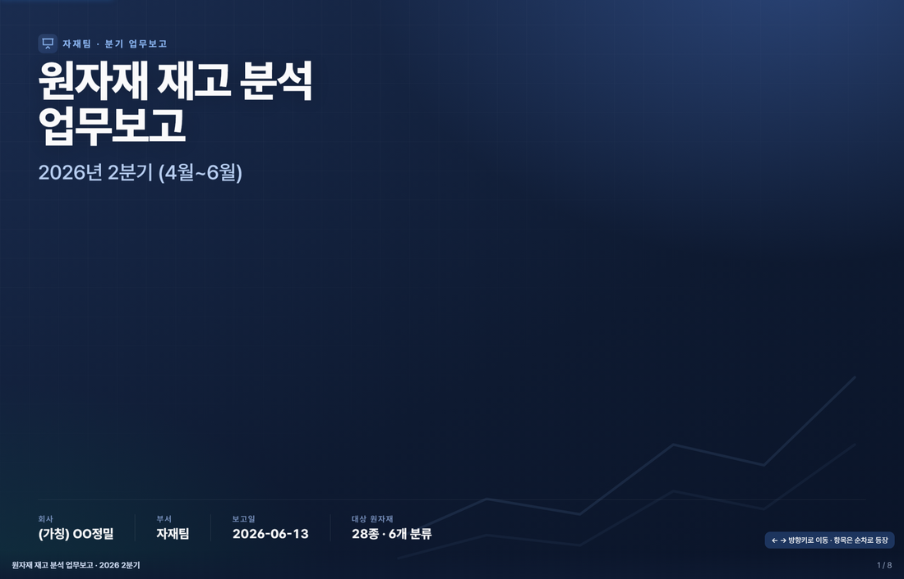

| 자재코드 | 자재명 | 기초 | 입고 | 출고 | 기말 | 상태 |
|---|---|---|---|---|---|---|
| M-1021 | 냉연강판 금속재 | 593 | 553 | 1,070 | 76 | 부족 |
| M-1044 | 알루미늄 판재 금속재 | 110 | 125 | 139 | 96 | 정상 |
| P-2077 | PC 펠릿(투명) 수지 | 534 | 410 | 910 | 34 | 부족 |
| P-2091 | 나일론 PA66 수지 | 381 | 333 | 452 | 262 | 정상 |
| E-3300 | MLCC 적층 콘덴서 전자 | 820 | 1,240 | 1,510 | 50 | 부족 |
[상황] 제조기업 자재팀이라고 하자. 원자재 입출고를 기록하는 '원자재 관리대장'이 있고, 이번 분기 재고 상태를 분석해 경영진에 업무보고를 하려고 해. [요청] 이 실습에 쓸 '원자재 관리대장'을 엑셀 파일(.xlsx)로 만들어줘. - 임의의 원자재 20~30종 (분류: 금속재·수지/플라스틱·전자부품·체결부품·고무/실리콘·소모재 등) - 컬럼: 자재코드·자재명·분류·기초재고·입고수량·출고수량·기말재고·표준단가·기말재고금액·안전재고·재고상태(정상/부족) - '기초+입고−출고=기말'이 맞게, 일부 품목은 안전재고 미달(부족)로 - 최근 3개월 월별 입·출고도 포함 - 분석용 '피벗테이블'도 같은 파일에: ① 분류별 입·출고 집계 ② 자재별 수불·기말재고 ③ 월별 입·출고 추이 결과는 [폴더 경로] 폴더에 [파일명].xlsx 로 저장해줘. 빠진 정보 있으면 작업 전에 나에게 먼저 물어봐서 꼼꼼히 확인 후 진행해줘.
[역할] 너는 제조기업 자재팀의 데이터 분석가 겸 보고자료 기획자야. [입력] 방금 만든 '원자재 관리대장' 엑셀 파일 안에 있는 피벗 시트까지 읽어서 분석해. [목표] 이 데이터로 '원자재 재고 분석 업무보고'(약 10분·슬라이드 7~9장)의 '스토리보드'를 만들어줘. (아직 슬라이드·PPT는 만들지 말고, 설계만.) [담을 것] 흐름(표지→요약→핵심지표→분류·품목→월별추이→위험→결론·제안) / 각 슬라이드마다 키 메시지·근거 수치(임의 숫자 금지)·추천 차트(막대/추이선/표). [저장] 화면에 나열만 하지 말고 '[파일명].txt'로 만들어 [폴더 경로] 폴더에 저장해줘. [조건] 청중=경영진·팀장(빠른 결정). 빠진 정보 있으면 작업 전에 나에게 먼저 물어봐서 꼼꼼히 확인 후 진행해줘.
[입력] 방금 만든 '원자재 관리대장' 엑셀과 '재고분석_스토리보드.txt'를 읽어서. [목표] 위 스토리보드를 그대로 옮긴 '보고 발표용 슬라이드'를 만들어줘 — 단, 파워포인트가 아니라 HTML 파일 1개로. - 스토리보드의 슬라이드 순서·키 메시지·근거 수치·추천 차트를 그대로 반영 - 수치는 엑셀/스토리보드 값 그대로 (임의 숫자 금지) - 방향키(← →)로 한 장씩 넘기고, 서브 항목이 순차로 등장하는 인터랙티브 발표 형식 - 경영진 보고용으로 전문적이고 깔끔하게, 차트는 막대/추이선/표로 시각화 - 휴대폰·프로젝터에서도 잘 보이게(반응형) [저장] 결과는 '[파일명].html'로 만들어 [폴더 경로] 폴더에 저장해줘. [조건] 빠진 정보 있으면 작업 전에 나에게 먼저 물어봐서 꼼꼼히 확인 후 진행해줘.
[입력] 방금 만든 발표 슬라이드 HTML 파일을 열어서, 내용·수치·슬라이드 구성은 그대로 두고 '시각 완성도'만 한 단계 끌어올려줘. (데이터·문구·슬라이드 순서는 절대 바꾸지 마.) [높일 것 — 발표 등급으로] 1) 추이 차트(SVG): 정적인 선을 'stroke-dashoffset'으로 그려지듯 등장시키고, 점·값 라벨·순증감 막대는 슬라이드 진입 시 순차로 나타나게(부드러운 ease). 2) 아이콘: KPI 카드와 섹션 제목(kicker)에 어울리는 '작은 인라인 SVG 아이콘'을 소량만. (이모지 말고 선형 아이콘, 과하지 않게.) 3) 깊이감: 섹션마다 연한 강조색 사이드 악센트 또는 큰 워터마크 번호, 카드에 hover 시 미세한 떠오름(그림자+살짝 상승). 4) 슬라이드 전환: 현재 opacity만 → 'fade + 살짝 슬라이드업'을 슬라이드 단위로도 적용. 5) 표지: 배경에 아주 희미한 차트/격자 고스트로 히어로감만 살짝.
[하지 말 것] - 새 파일로 다시 만들지 마(기존 파일을 수정). 수치·내용·슬라이드 개수 변경 금지. - 외부 라이브러리 무겁게 끌어오지 마(단일 HTML 유지). 과한 애니메이션·장식 금지. - 방향키/터치/클릭 이동, 진행바, 반응형은 그대로 유지(깨뜨리지 마). [저장] 같은 파일에 덮어쓰되, 혹시 몰라 '[파일명]_v2.html'로도 한 부 저장해줘. [조건] 빠진 정보 있으면 작업 전에 나에게 먼저 물어봐서 꼼꼼히 확인 후 진행해줘.
태양계를 배우는 '한 페이지 학습 웹사이트'의 첫 화면을 만들어 [파일명].html 로 [폴더 경로] 폴더에 저장해 줘. - 제목: 태양계 여행 / 한 줄 소개: 태양과 8개 행성을 한눈에 - 전문적이고 모던한 스타일에, 시네마틱한 히어로 섹션([내려받은_영상].mp4)을 첫 화면 전체 배경으로 (자동재생·무음·반복, 폰에서도 재생되게 인라인 재생) - 글자가 잘 보이도록 어둑한 오버레이를 깔고, 제목·소개는 화면 중앙에 - 휴대폰에서도 잘 보이게 반응형으로 (요소에 고정 px 폭을 넣지 말 것) - 전체를 HTML 파일 1개로 빠진 정보 있으면 작업 전에 나에게 먼저 물어봐서 꼼꼼히 확인 후 진행해줘.
[입력] 방금 만든 태양계 첫 화면 HTML을 열어서, 그 히어로(배경 영상·제목)는 그대로 두고 '완성된 학습 사이트'로 키워줘. (새로 만들지 말고 이 파일을 이어서 발전.) [추가할 내용] 1) 행성 8개 섹션(수성·금성·지구·화성·목성·토성·천왕성·해왕성): 각 카드에 이름·한 줄 특징·핵심 정보 2~3가지(중학생 눈높이). ※거리·지름·위성 수 같은 '사실'은 정확하게. 확실하지 않으면 지어내지 말고 비워 두고 알려줘. 2) 행성 이미지가 없으면 행성별 색·느낌을 살린 원형 그라데이션으로. 3) 상단 고정 메뉴(홈·행성·퀴즈) — 누르면 해당 위치로 부드럽게 스크롤. 4) 행성 카드를 누르면 상세 설명이 열리게(팝업/패널). 5) 맨 아래 '태양계 퀴즈' 5문제 — 정답/오답 즉시 표시 + 점수.
[디자인 — 완성도 한 단계 위로] - 우주 테마 일관(딥네이비/블랙 + 은은한 별 배경), 시네마틱하고 모던하게. - 스크롤하면 각 섹션이 '부드럽게 떠오르는' 등장, 카드 hover 시 미세한 상승. - 타이포 크기·여백 리듬을 정돈해 '읽기 편하고 묵직하게'. [하지 말 것] - 새 파일로 다시 만들지 마(기존 첫 화면 기반). 단일 HTML 유지. - 고정 px 폭 금지(반응형), 배경 영상은 무음·인라인 재생 유지. - 사실(행성 수치)을 지어내지 마 — 모르면 비워 두고 표시. [저장] 같은 파일에 덮어쓰되 '[파일명]_v2.html'로도 한 부.
그라데이션 원을 공개 출처(NASA)의 실사로 교체 — 출처·라이선스 확인.
행성마다 2~3개씩 — 신뢰 출처의 '사실'만, 모르면 비워 두고 '확인 필요'.
지구 한 바퀴·행성까지 교통수단별 시간 — 실제 거리·속도로, 기준 표기.
버튼 하나로 배경·발광·강조색이 바뀌는 다섯 가지 우주의 결.
[입력] 방금 만든 '태양계' 학습 사이트 HTML을 기준으로, 구조는 살리되 '훨씬 웅장하고 신비로운' 완성도로 대폭 업그레이드해줘. (처음부터 새로 만들지 말고 이 파일을 발전.) [1) 진짜 행성 사진 — 가장 중요] - 지금의 그라데이션 원(애니 느낌)을 '실제 행성 사진'으로 교체. - 재사용이 허용된 공개 출처(NASA 등 퍼블릭 도메인)에서 각 행성의 실제 사진을 받아 같은 폴더의 'images/'에 저장하고 그 로컬 파일을 써줘(인터넷이 끊겨도 보이게). - 각 사진이 '그 행성이 맞는지' 확인하고, 출처(NASA 등)를 페이지에 표기. 라이선스가 불확실하거나 출처를 모르는 이미지는 쓰지 마. [2) 더 깊고 '진짜인' 정보] - 각 행성에 '잘 알려지지 않은 흥미로운 사실' 2~3개씩 추가 — 단 NASA 등 신뢰 출처의 '사실'만. - 확실하지 않으면 지어내지 말고 비워 두고 '확인 필요'로 표시. [3) 학생이 재밌어할 '탐구' 코너 — 이동시간] - 지구 한 바퀴(둘레 약 40,075 km)를 자전거·자동차·기차(고속)·비행기로 돌면 걸리는 시간. - 지구에서 각 행성까지 같은 교통수단으로 가면 걸리는 시간. - 반드시 '실제 거리·속도 값'으로 계산하고, 사용한 속도와 거리 기준(평균/최근접 등)을 함께 표시해줘. 숫자를 지어내지 마. - 가능하면 교통수단을 고르면 결과가 바뀌는 간단한 인터랙션으로.
[4) 웅장함·신비감 — 디자인] - 깊은 우주 느낌(딥블랙 + 미세한 별·성운), 행성마다 은은한 발광(글로우)과 떠 있는 듯한 움직임. - 스크롤에 따라 행성이 천천히 드러나는 시네마틱 연출, 부드러운 패럴럭스. - '자세히 보기'는 밋밋하지 않게 — 큰 사진 + 핵심 수치 + 흥미 사실 + 한 줄 '신비 포인트'. [5) 우주 무드 5종 전환] - 화면 한쪽에 '무드' 버튼 5개 — 누르면 페이지 전체 분위기(배경·발광색·강조색)가 부드럽게 바뀌게. - 우주의 신비를 살린 5가지 결: 예) 심연(딥블랙)·오로라(청록보라)·성운(핑크퍼플)·일식(골드앰버)·은하(인디고실버). 이름·색은 더 멋지게 다듬어도 좋아. - 어떤 무드에서도 글자 가독성과 행성 사진이 잘 보이게(대비 유지). 사진 자체는 그대로 두고 배경·톤만 변하게. [하지 말 것] - 새 파일로 다시 만들지 마(기존 파일 기반). 단일 HTML 유지(이미지는 'images/' 로컬 파일). - 요소에 고정 px 폭 금지(반응형 유지), 배경 영상은 무음·인라인 재생 유지. - 사실·수치를 지어내지 마. 출처 불명 이미지·정보는 쓰지 마. [저장] 같은 파일에 덮어쓰되 '[파일명]_v3.html'로도 한 부 저장. 이미지는 같은 폴더 'images/'에. [조건] 빠진 정보 있으면 작업 전에 나에게 먼저 물어봐서 꼼꼼히 확인 후 진행해줘.
[입력] 방금 업그레이드한 '태양계' 사이트 HTML을 기준으로 두 가지를 더 살려줘. (기존 파일 이어서 발전, 새로 만들지 마.) [A) 행성이 '천천히 자전'하게 — 신비감 ↑] - 지금은 행성의 한쪽 면만 보임 → 자전하듯 표면 전체가 서서히 흘러 보이게. - 무거운 3D 라이브러리 없이: 각 행성의 '표면 전체를 가로로 펼친 지도(equirectangular 맵)' 이미지를 NASA 등 공개·재사용 가능한 출처에서 받아 'images/'에 저장하고, 원형(구체) 안에서 그 지도를 좌우로 천천히 흐르게 해 도는 것처럼 보이게 해줘. (가장자리 음영으로 입체감, 부드럽게 — 모바일에서 버벅이지 않게) - 출처 표기, 라이선스 불확실한 이미지는 쓰지 마. 표면 지도를 못 구한 행성은 기존 사진/그라데이션을 유지하고 '회전 미적용'으로 둬(지어내지 말 것).
[B) 퀴즈를 '계속 도전하고 싶게'] - 문제 은행을 넉넉히(15~20문제, NASA 등 신뢰 출처의 사실 기반 — 지어내기 금지). - '새 퀴즈' 버튼을 누르면 은행에서 매번 다른 5문제를 무작위로 출제(보기 순서도 섞기). - 다 풀면 점수 + 점수대별 격려 메시지, '다시 도전' 버튼, 그동안의 '최고 점수' 표시로 재도전하고 싶게. - 정답/오답 즉시 표시는 유지. [하지 말 것] - 새 파일로 다시 만들지 마(기존 파일 기반). 단일 HTML 유지(이미지는 'images/' 로컬). - 고정 px 폭 금지(반응형), 배경 영상 무음·인라인 유지. - 사실·수치·이미지 출처를 지어내지 마. [저장] 같은 파일에 덮어쓰되 '[파일명]_v4.html'로도 한 부. [조건] 빠진 정보 있으면 작업 전에 나에게 먼저 물어봐서 꼼꼼히 확인 후 진행해줘.
내 책상의 엑셀·대장을 올려 — 오늘 배운 그대로 분석하고 발표 보고서까지.
'태양계' 자리에 내 수업 주제를 넣어 — 한 페이지 학습 사이트로.